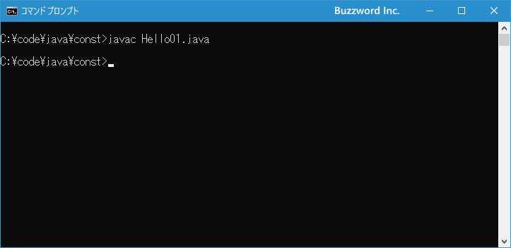
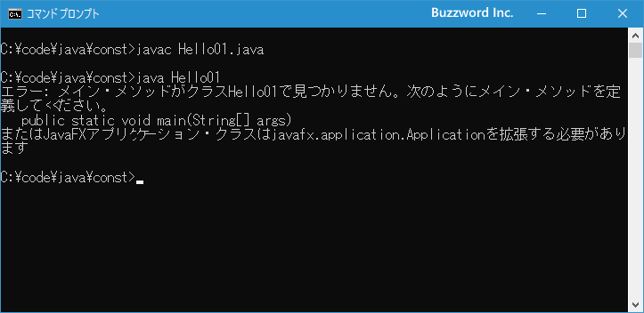
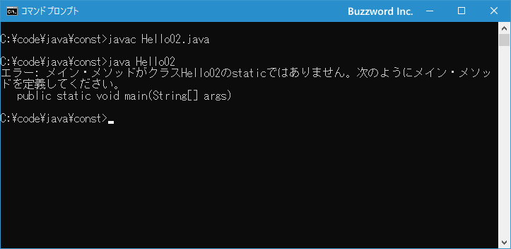

mainメソッドとは
ここまでのサンプルで必ず main メソッドが作成されていましたが、 Java で作成したプログラムをコンパイルして実行すると、最初に呼び出されるメソッドが main メソッドです。ここでは main メソッドの役割について簡単に解説します。
mainメソッドとは
これまでに何度か使っているサンプルプログラムです。このクラスにはメソッドが一つだけ記述されており、その名前は main メソッドとなっています。
class Hello{
public static void main(String[] args){
System.out.println("Hello");
}
}
このプログラムを Hello.java として保存し、コンパイルすると Hello.class が作成されます。そしてプログラムを実行するために java Hello と実行したとき、最初に呼び出されるメソッドが Hello クラスの main メソッドです。
main メソッドのブロック内にあるコードが順番に実行されていきますが、今回のサンプルでは画面に Hello と出力するコードが 1 行記述されているだけなので、このコードを実行してプログラムは終了します。
このように main メソッドは他のメソッドとは異なる特別なメソッドとなっています。もし実行しようとするクラスの中に main メソッドがなかった場合、コンパイルエラーにはなりませんがプログラムを実行するときにエラーとなってしまいます。
例としてメソッド名を main ではなく greeting という名前に変更したサンプルを作成しました。
class Hello01{
public static void greeting(String[] args){
System.out.println("Hello");
}
}
コンパイルを行ってもエラーにはなりません。

ただプログラムを実行しようとすると「エラー: メイン・メソッドがクラスHello01で見つかりません。」というエラーが発生します。

このように実行するクラスには必ず main メソッドが必要となります。
mainメソッドの書式
main メソッドは次のような書式となっています。
public static void main(String[] args){
// ...
}
main メソッドもメソッドの一つなので他のメソッドと違いはないのですが、いくつかルールがあります。名前を main にすること、プログラムの起動時に指定された引数を受け取るための仮引数を記述すること、そして public と static という修飾子を記述すること、です。
class Hello{
public static void main(String[] args){
System.out.println("Hello");
}
}
詳しい説明は別のページで行いますが、 public はこのメソッドがすべてのクラスからアクセス可能なことを宣言しています。また static はこのメソッドがクラスから作成したオブジェクトのメンバーではなく、クラスそのもののメンバーであるクラスメソッドであることを宣言しています。
例としてメソッド名を main メソッドで public と static を記述しないサンプルを作成しました。
class Hello02{
void main(String[] args){
System.out.println("Hello");
}
}
コンパイルを行ってもエラーにはなりません。
ただプログラムを実行しようとすると「エラー: メイン・メソッドがクラスHello02で見つかりません。」というエラーが発生します。

main メソッドそのものはクラスで定義はされているのですが、 publi や static が記述されていないため外部から呼び出すことができないためです。 main メソッドは必ず決められた書式で作成するようにしてください。
-- --
プログラムの実行時に最初に呼び出される main メソッドの役割と書式について解説しました。
( Written by Tatsuo Ikura )

著者 / TATSUO IKURA
初心者～中級者の方を対象としたプログラミング方法や開発環境の構築の解説を行うサイトの運営を行っています。